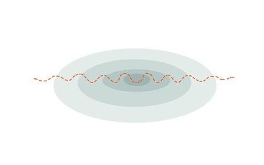
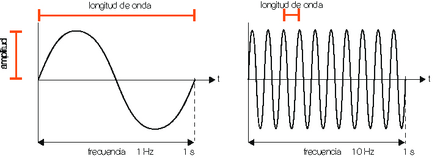

¡Bienvenidos Estudiantes!
Si quieren ver más temas relacionados a la física pueden ver el temario accediendo nuevamente al apartado superior y seleccionando el tema de su elección.
Las ondas
física, se utiliza la palabra “onda” para designar la trasmisión de energía sin desplazamiento de materia. Se trata de una perturbación o agitación que se desplaza en un ambiente determinado y que, después de pasar, lo deja en su estado inicial. Este mecanismo cubre una amplia gama de situaciones: Desde las ondas en la superficie de un líquido hasta la luz, que es en sí un tipo de onda.
¿Qué es una onda?
En física, se utiliza la palabra “onda” para designar la trasmisión de energía sin desplazamiento de materia.
Se trata de una perturbación o agitación que se desplaza en un ambiente determinado y que, después de pasar, lo deja en su estado inicial.
Este mecanismo cubre una amplia gama de situaciones: Desde las ondas en la superficie de un líquido hasta la luz, que es en sí un tipo de onda.
El transporte de energía sin materia es un fenómeno físico común. Imaginemos un estanque en un día soleado y sin viento. La superficie del agua está perfectamente lisa. Ahora imaginemos que alguien lanza una piedra: En el punto de impacto, vemos aparecer inmediatamente ondulaciones que parecen alejarse del centro en círculos concéntricos. Al cabo de algunos instantes, el estanque está nuevamente liso e inmóvil.
Energía convertida en oscilación
¿Qué ha ocurrido? La piedra arrojada creó una perturbación en el agua y esta última absorbe una parte de la energía de la piedra. La perturbación se propaga alrededor del punto de impacto. El agua se mueve hacia arriba y hacia abajo creando una ondulación que a su vez creará otras. Esto quiere decir que se transfiere una parte de la energía de una ondulación a la siguiente.
Una vez que se haya dispersado de onda en onda la energía de la piedra, la superficie del agua regresa a su estado inicial. La altura, la distancia y la duración de las ondas dependen de la energía suministrada inicialmente, en otras palabras, de la masa de la piedra y de la fuerza con la que se le lanzó.
Estas oscilaciones (u “ondulaciones”) en la superficie del agua permiten “ver” las ondas de la manera más simple y directa. Sin embargo, existen muchos otros tipos de onda que siguen el mismo principio pero que no son visibles a simple vista.

Características fundamentales
Se puede describir todas las ondas mediante tres características:
- amplitud: que corresponde a la altura de las oscilaciones.
- longitud de onda: que mide la distancia entre dos oscilaciones.
- frecuencia: que refleja el número de oscilaciones por segundo (expresado en hercios e inversamente proporcional a la longitud de onda);

Todas las ondas obedecen al principio de “transporte de energía sin desplazamiento de materia” y constituyen una gran familia en la que se puede identificar varios tipos, con diversas propiedades físicas. Existen en particular dos tipos: Las ondas mecánicas que para propagarse requieren un soporte material y las ondas electromagnéticas que no necesitan tal soporte.
diferentes tipos de onda
Todas las ondas obedecen al principio de “transporte de energía sin desplazamiento de materia” y constituyen una gran familia en la que se puede identificar varios tipos, con diversas propiedades físicas. Existen en particular dos tipos: Las ondas mecánicas que para propagarse requieren un soporte material y las ondas electromagnéticas que no necesitan tal soporte.
ondas mecánicas y acústicas
Golpear simplemente con un dedo la esquina de una mesa crea ondas mecánicas que se propagan en el aire (el sonido de percusión) y en la mesa (en forma vibración). Las olas son otro ejemplo, desde las ondulaciones en un estanque hasta una onda de marea. Las ondas sísmicas pertenecen a esta categoría, son la consecuencia de profundos choques geológicos y se propagan a través de la corteza terrestre.
En el otro extremo de la escala, pulsar una goma elástica la hace vibrar generando ondas mecánicas que la recorren.
El sonido es más universal: Se trata de una onda generada por la vibración mecánica de un material y que se desplaza a través del aire o el agua. Estas ondas acústicas son muy fáciles de ajustar o “modular”: Si se habla en una u otra dirección, si se grita o susurra, cada uno de estos cambios alterará la longitud, la amplitud de la onda y la frecuencia del sonido.
campos electromagnéticos
Las ondas electromagnéticas (conocidas también como campos electromagnéticos o CEM) constituyen una categoría igualmente variada, que se puede clasificar por bandas de frecuencia (conocidas como “espectro” electromagnético).
Este espectro se extiende desde las frecuencias más bajas (por ejemplo, aquellas de las líneas eléctricas) hasta las frecuencias más altas (rayos UV, rayos X, rayos gamma). Entre estos dos extremos se encuentran las ondas de radio (o radiofrecuencias) presentes y utilizadas en las comunicaciones y, por supuesto, la luz: Todo lo que nuestros ojos ven es transmitido por campos electromagnéticos, cuya frecuencia corresponde a la franja “visible” del espectro.
¿Qué distingue entonces los campos electromagnéticos de las ondas acústicas? Los campos electromagnéticos no requieren ningún medio para atravesar grandes distancias a alta velocidad (como la luz de las estrellas) ni para atravesar el vacío o determinados materiales.
ondas ionizantes y no ionizantes: ¡no se admite ninguna confusión!
La frecuencia de una onda también refleja la cantidad de energía que puede transportar. A frecuencias muy altas, es decir, muy por encima del espectro visible, la cantidad de energía es tan grande que puede modificar la estructura de la materia que atraviesa, por ejemplo, alterando una molécula, liberando un electrón de un átomo y transformándolo en un ion.
Esta categoría de onda, conocida como “radiación ionizante” es un riesgo sanitario en caso de exposición prolongada.
La frecuencia de una onda también refleja la cantidad de energía que puede transportar. A frecuencias muy altas, es decir, muy por encima del espectro visible, la cantidad de energía es tan grande que puede modificar la estructura de la materia que atraviesa, por ejemplo, alterando una molécula, liberando un electrón de un átomo y transformándolo en un ion.
Esta categoría de onda, conocida como “radiación ionizante” es un riesgo sanitario en caso de exposición prolongada.
muchos usos
Cada una de las diferentes bandas de frecuencia tiene su aplicación, entre otras:
Se utiliza las frecuencias bajas y muy bajas (menos de 50 kHz) en algunas comunicaciones submarinas (hidrófono) o incluso en detectores de metal. Son emitidas por las líneas de transporte de electricidad.
(desde 100 kHz hasta 300 GHz aproximadamente) constituyen la mejor banda de espectro para las telecomunicaciones: Radio, televisión, radar, telefonía inalámbrica, telefonía móvil, Wi-fi, etc.
En lo que se refiere a las ondas infrarrojas, se utilizan en dispositivos de mando a distancia, equipos de visión nocturna o incluso dispositivos como lámparas para incubadoras de cría. Respetando reglas de seguridad específicas, las radiaciones ionizantes son también útiles. Así, se emplea los rayos ultravioletas en aparatos tan diversos como cabinas de bronceado, detectores de billetes falsos y dispositivos para la secuenciación del ADN.
Se utiliza los rayos X en radioscopia médica, así como en sistemas de seguridad de lugares públicos (escáneres de equipaje) y en la industria, en particular para verificar piezas de metalurgia. Por último, los rayos gamma tienen varias aplicaciones médicas en diagnóstico (gammagrafía) y terapia (radioterapia).